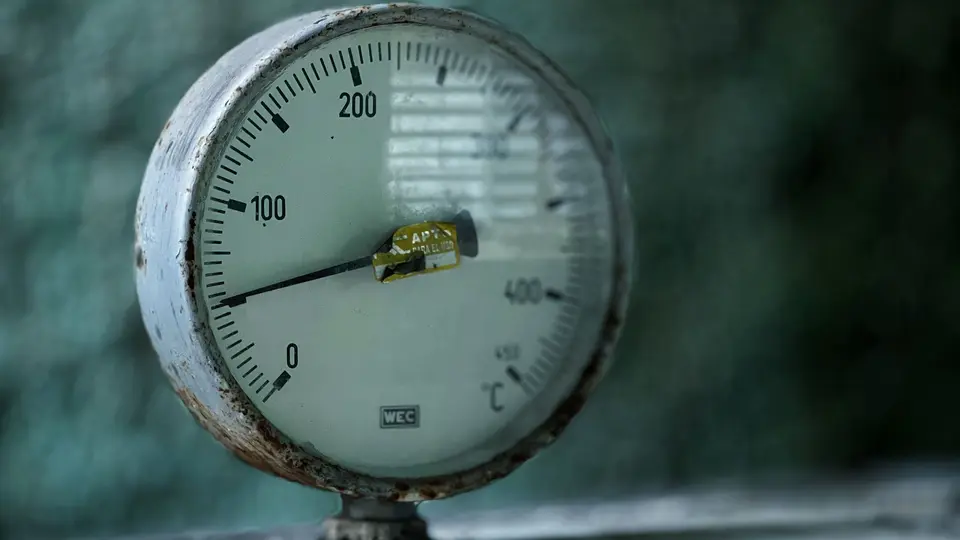

Calibração de Transmissor de Temperatura

Veja como calcular erro e sinal esperado em transmissores de temperatura 4-20 mA com RTD, termopar ou simulador.
Antes do teste, defina o que será calibrado: somente a eletrônica do transmissor, o sensor separado ou o conjunto sensor + transmissor. Simular um RTD ou termopar nos bornes verifica a conversão elétrica, mas não avalia o sensor instalado, o poço termométrico nem a influência da montagem.
RTD, termopar e entrada configurada
Em uma entrada RTD, o transmissor interpreta resistência. Tipo de elemento, ligação a 2, 3 ou 4 fios e resistência dos cabos afetam o resultado. Em uma entrada de termopar, o transmissor interpreta uma tensão muito pequena; tipo de termopar, polaridade, material dos cabos de extensão e compensação da junta fria precisam estar coerentes.
Selecionar Pt100 quando o instrumento está configurado para outro tipo de RTD, ou simular termopar sem tratar corretamente a junta fria, produz um erro de método que pode ser confundido com defeito do transmissor.
Dados necessários antes da calibração
- Sensor configurado: tipo de RTD ou termopar e padrão/curva correspondente.
- Ligação: número de fios, polaridade, bornes e compensação de junta fria.
- Faixa: LRV e URV em °C ou unidade configurada.
- Saída: 4–20 mA linear, protocolo digital e escala no sistema de controle.
- Padrão: simulador ou fonte térmica com faixa, rastreabilidade e incerteza adequadas.
Simulação elétrica ou calibração com temperatura real?
Na simulação elétrica, o calibrador reproduz o sinal de um RTD ou termopar e permite comparar a saída do transmissor. É um teste rápido da eletrônica e da configuração. Na calibração com bloco seco ou banho, sensor e transmissor podem ser avaliados como sistema, comparando a temperatura de referência com a indicação e a corrente.
Os dois métodos respondem perguntas diferentes. Se a eletrônica passa na simulação, mas o conjunto apresenta erro em temperatura real, investigue sensor, cabos, poço, imersão, contato térmico, gradiente e tempo de estabilização.
Saída esperada em 4–20 mA
Para um transmissor linear, a corrente esperada é 4 mA + 16 mA × fração da faixa. Em uma configuração de −50 a 150 °C, o ponto de 50 °C está em 50% do span e corresponde a 12 mA. A diferença entre temperatura equivalente medida e referência pode ser expressa em °C; a aceitação deve seguir o critério e a regra de decisão definidos no procedimento.
Erros comuns de campo
- Simular o tipo errado de sensor ou usar curva diferente da configurada.
- Inverter a polaridade do termopar ou empregar cabo de extensão incompatível.
- Ignorar resistência dos fios em RTD de 2 fios ou ligação incorreta em 3/4 fios.
- Registrar o ponto antes da estabilização térmica.
- Ajustar o transmissor sem registrar a condição encontrada.
- Declarar o conjunto aprovado quando apenas a eletrônica foi simulada.
Exemplo prático de aplicação
Considere o transmissor de −50 a 150 °C. O calibrador simula 50 °C e a saída medida é 12,16 mA. A corrente está 0,16 mA acima do esperado. Na escala configurada, isso corresponde a +2 °C. O valor deve ser comparado ao erro máximo permitido e à incerteza do método antes de qualquer conclusão.
Se o mesmo transmissor for testado com seu sensor em um bloco seco, uma diferença adicional pode vir do próprio sensor, da profundidade de imersão ou do tempo de estabilização. Por isso, o relatório deve identificar claramente o método utilizado.
Checklist rápido antes de decidir
- Tipo de sensor, ligação e faixa foram conferidos antes do teste?
- A compensação de junta fria está coerente com o método?
- Os pontos de subida e descida foram registrados?
- A estabilização foi confirmada antes da leitura?
- O registro diferencia eletrônica, sensor e conjunto completo?
Ferramenta e conteúdos relacionados
Use a ferramenta relacionada para fazer uma primeira simulação e depois navegue pelos materiais complementares para fechar o raciocínio técnico.
- Calculadora de Calibração de Transmissor DP de Vazão (ferramenta)
- Calculadora de Calibração de Transmissor de Nível DP (ferramenta)
- Calculadora de Calibração de Transmissor de Pressão (ferramenta)
- Calculadora de Calibração de Transmissor ORP (ferramenta)
- Calibração de Transmissor de Pressão (artigo)
- Calibração de Cartão Analógico CLP/DCS (artigo)
Referências para aprofundamento
- Fluke 724 — simulação de RTD/termopar e medição simultânea de 4–20 mA.
- Fluke Calibration 9144 — calibração do sensor e transmissor como sistema.
Aviso técnico
Este material é educativo e serve para pré-dimensionamento, conferência e apoio à análise técnica. Para aplicações críticas, segurança de processo, eletricidade, pressão, caldeiras, áreas classificadas, intertravamentos, laudos, compra final de equipamento ou alteração permanente de instalação, a validação deve considerar normas aplicáveis, documentação do fabricante, condições reais de campo e profissional habilitado.